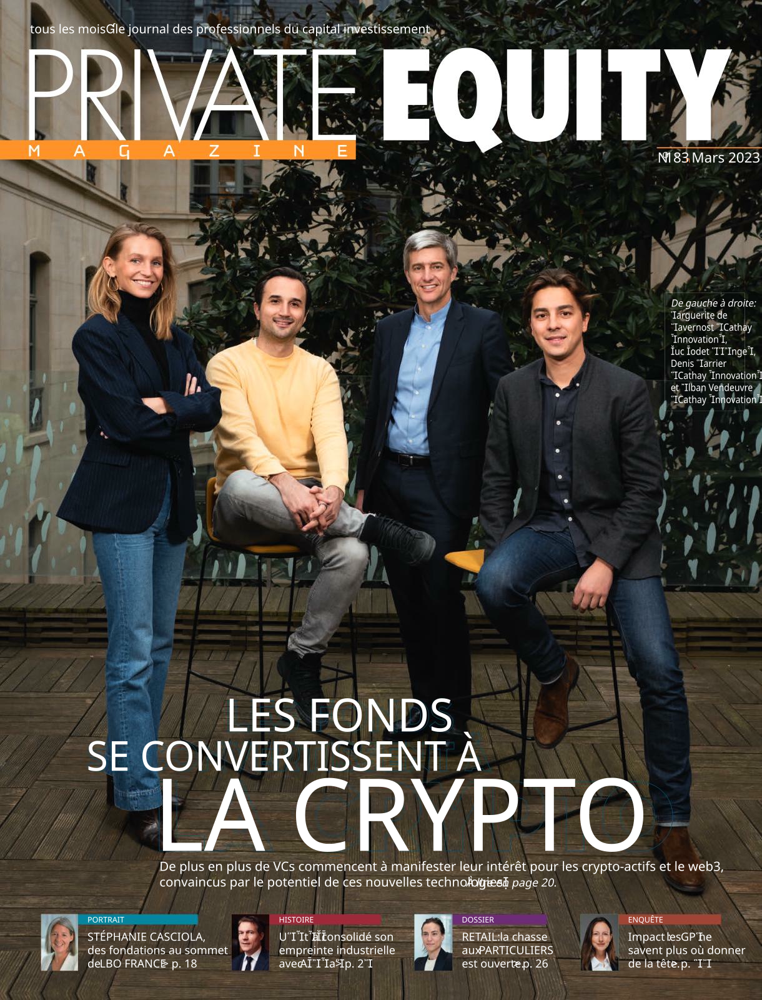

Luc Jodet
Co-founder of Arianee, former partner at XAnge — now researching how artificial intelligence is reshaping work, as a PhD candidate at EPFL studying AI and job displacement.
About
Luc Jodet has spent the last decade building and backing technology companies at the frontier of digital ownership. After beginning his career as a business analyst at a Fortune 500 company, he co-founded BUYECO, a Swiss renewable-energy marketplace sourcing electricity for large corporate customers — the project through which he first encountered blockchain, working on energy-traceability solutions.
In 2017 he co-founded Arianee, the open protocol for digital product passports adopted by luxury houses such as Breitling, Lacoste and Panerai. Arianee raised over $30 million. He went on to co-found NFT Factory, the Paris hub for the French web3 ecosystem, and joined XAnge — one of Europe's leading early-stage venture firms — as a partner focused on web3 and crypto.
He holds a Master's degree from SciencesPo, and a Bachelor of Economics.
Entrepreneurial
Arianee
Co-founder
The leading open protocol for digital product passports and tokenized brand experiences, used by global luxury and fashion houses.
NFT Factory
Co-founder
The Paris home of web3 — a collective of 128 builders, artists and investors anchoring the French crypto ecosystem in the heart of the city.
BUYECO
Co-founder
A Swiss renewable-energy marketplace connecting large corporate buyers with green electricity producers.
Investing
XAnge
Partner
Early-stage investing at the Franco-German venture firm behind Ledger and Odoo, with a focus on digital ownership and crypto infrastructure.
Angel Investments
Angel Investor
Personal investments in web3 and crypto companies, including Morpho, Bolero and Rain.fi (acquired by Jupiter).
Research
After a decade operating at the edge of each successive technology wave, Luc is turning to the question that wave now poses to everyone else: what happens to work when intelligence becomes a commodity?
AI and Job Displacement
Doctoral research at EPFL (École Polytechnique Fédérale de Lausanne) examining how artificial intelligence transforms labor markets — which tasks and occupations are displaced, which are created, and how firms, workers and policymakers can navigate the transition. The work draws on Luc's operating experience deploying emerging technologies inside large organizations, from blockchain to AI.
Press & Interviews

Private Equity Magazine · 2023
Les fonds se convertissent à la crypto — cover feature with Luc Jodet of XAnge
- Sifted 17 Blockchain Startups to Watch, According to VCsLuc Jodet of XAnge among the VCs surveyed; Arianee featured as a startup to watch 2024
- JDN Web3 : dans la tête des business angelsHow French Web3 investors, including Luc Jodet, evaluate early-stage deals 2023
- Agefi Les institutionnels lorgnent les jetons de gouvernance de la crypto 2023
- Les Echos Crypto : plus de 30 milliards de dollars investis en 2022 2023
- Vanity Fair Les NFT sont morts, vive les NFT 2023
- Les Echos Web3 : pourquoi le fonds français XAnge mise 80 millions d'euros dans le secteurOn XAnge's Digital Ownership fund, led by Luc Jodet 2022
- Les Echos Promoteur du web3, Arianee lève 20 M€On Arianee's Series A funding round led by Tiger Global 2022
- The Big Whale Why Web3 Funds Are Springing Up Like MushroomsLuc Jodet on institutional appetite for Web3 investing via XAnge's new fund 2022
- Les Echos XAnge recrute un partner pour son fonds web3Announcing Luc Jodet's move to XAnge to lead its web3 fund 2022
- Les Echos Les fonds de capital-risque français accélèrent dans la cryptoOn Luc Jodet joining XAnge to lead its web3 investing 2022
- CoinDesk Arianee, Early Pioneer of NFTs for Luxury Provenance, Raises $9.5M 2021
- WWD Metaverse Could Disrupt Fashion as Much as Streetwear, Say Speakers at Paris ConferenceLuc Jodet of Arianee on a panel about fashion in the metaverse 2021
- Les Echos Métavers : Nike rachète une marque de mode digitale basée sur des NFTLuc Jodet comments on Nike's acquisition of RTFKT 2021
- Sifted Startups Are Fighting Thieves by Putting Your Rolex on the BlockchainEarly feature on Arianee's blockchain authentication technology 2019
- CoinDesk Fur Real? Businesses Test CryptoKitties-Inspired Ethereum TechOn Arianee's early smart-asset prototypes for watches, handbags and champagne 2018
Talks & Podcasts

Crypto Valley Conference · 2025
The Self-Driving Economy: How Blockchain and AI Agents Will Reshape Everything

NFT.NYC · 2023
Speaking NFT: How Creators Use NFTs to Have Better Conversations

Natixis CIB ExploreTech · 2022
2nd Roundtable: Digital Assets
- Agent Economy Episode 1 — Luc Jodet co-hosts a new Runway Series exploring the intersection of AI and blockchain 2025
- Crypto Valley Conference Inside the minds of crypto VCs 2023
- Crypto Coulisses Ledger, Dogami, Coinhouse... dans la tête d'un VC web3 avec Luc Jodet 2023
- Paris Blockchain Week Bored Ape Yacht Club: the very first community-owned brand 2022
- Natixis CIB ExploreTech Off Screen — interview of Luc Jodet 2022
- EthCC Speaking NFT: how creators use NFTs to have better conversations 2022
- TechChill, Riga Creator Economy 101 — panel moderated by Ethan Pierse, Borderless Ventures 2022
- Crypto Current How to secure your NFTs — on Arianee's authentic, secure digital twins 2022
- NFT.NYC Brand Fueled NFTs — with Jonas Hudson, Nigel Write & Luc Jodet 2021
- EthCC Speaking NFT: how creators use NFTs to have better conversations 2021
- The Modern CFO The Future of Finance with Arianee — podcast conversation on scaling finance in a web3 company 2021
- Runway Series Les NFTs au cœur de leur techno depuis 2017 — French-language podcast on Arianee's origins in luxury 2021
- Vlan! #198 Blockchain & NFT: comprendre le phénomène avec Luc Jodet 2021